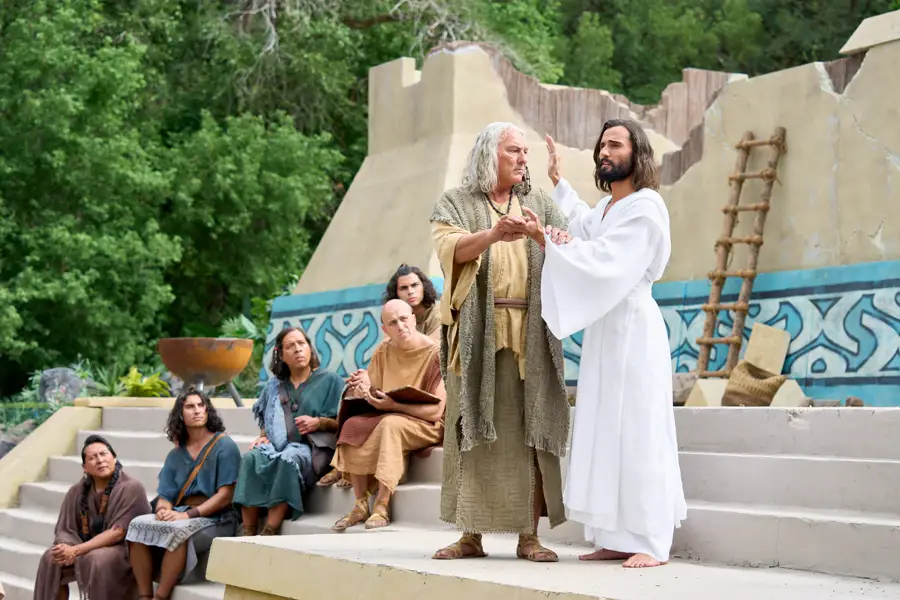

Les questions que nous nous posons tous
D'où est-ce que je viens ? Quel est le but de cette vie ? Y a-t-il quelque chose après la mort ? Ces questions accompagnent l'humanité depuis toujours. Pour L'Église de Jésus-Christ des Saints des Derniers Jours, l'Évangile rétabli apporte des réponses claires, cohérentes et pleines d'espérance.

D'où venons-nous ? — La vie préterrestre
Avant de naître sur cette terre, nous existions en tant qu'esprits en la présence de Dieu. Nous étions ses fils et ses filles spirituels. Nous vivions, apprenions et progressions. C'est là que le plan du salut nous a été présenté — la possibilité de venir sur terre, de recevoir un corps physique, d'être mis à l'épreuve et de progresser vers une plénitude de joie impossible dans notre état spirituel.
Cette vérité change tout : nous ne sommes pas des êtres humains qui vivent une expérience spirituelle, mais des êtres spirituels qui vivent une expérience humaine. Nous venons de quelque part, nous avons une origine noble et un Père qui nous connaît et nous aime individuellement.
Pourquoi sommes-nous ici ? — Le but de la vie terrestre
Nous sommes venus sur terre pour :
- Recevoir un corps physique — une partie essentielle de notre progression éternelle
- Être mis à l'épreuve et montrer si nous obéirons aux commandements de Dieu
- Apprendre par notre propre expérience la différence entre le bien et le mal
- Contracter des alliances sacrées avec Dieu, y compris le baptême
- Fonder des familles et apprendre à aimer et à servir les autres
L'oubli de notre vie préterrestre n'est pas une punition — il est nécessaire pour que l'épreuve de la vie terrestre soit réelle. Si nous nous souvenions de tout, il n'y aurait pas de véritable foi.

Que se passera-t-il après cette vie ?
Après la mort, notre esprit va dans le monde des esprits — un état intermédiaire où nous attendons la résurrection. Il y a là la possibilité de continuer à apprendre et d'entendre l'Évangile, en particulier pour ceux qui n'en ont pas eu l'occasion dans cette vie.
Après la résurrection et le jugement dernier, nous recevrons tous l'un des royaumes de gloire que Dieu a préparés :
- La gloire céleste — la plus élevée, où demeureront ceux qui ont accepté l'Évangile dans sa plénitude et en ont vécu les principes. On peut y être en la présence de Dieu et du Christ
- La gloire terrestre — pour ceux qui ont été des personnes honorables mais ont rejeté la plénitude de l'Évangile
- La gloire télestiale — pour ceux qui n'ont pas accepté l'Évangile et ont persisté dans le mal
Dans tous ces royaumes, il y a de la miséricorde. Dieu est juste et connaît le cœur de chaque personne. Son but est le bonheur de ses enfants — pas leur condamnation.
La résurrection et le corps éternel
Grâce à l'Expiation de Jésus-Christ, nous ressusciterons tous. Nos corps et nos esprits seront réunis de façon permanente dans un état glorifié. La mort n'est pas la fin — c'est une transition. Pour ceux qui ont vécu l'Évangile, c'est l'accueil dans quelque chose de bien plus grand.
Avez-vous des questions sur la vie éternelle ?
Nous serions heureux de parler avec vous du plan du salut et de ce qu'il signifie pour votre vie ici et maintenant.
Parlons-en